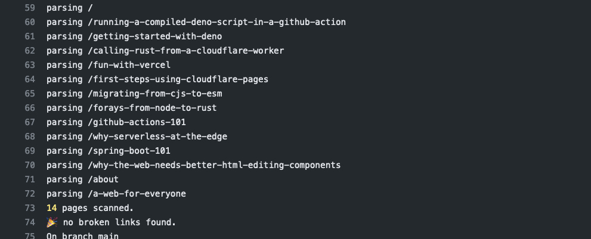

TL;DR
This is a quick followup to my recent post about Getting Started with Deno.
In this post I will enhance a GitHub Action to do the following:
- Generate HTML using a static site generator (SSG).
- Launch a preview web server which runs in the background.
- Download a compiled Deno script.
- Invoke the Deno script to scan for broken links in the generated HTML.
- Only publish the HTML if there are no broken links.
scan.js
I cross-compiled scan.js using Deno v1.8.1, and uploaded the resulting binaries to a release on GitHub.
Using the releases feature of GitHub is a convenient way to publish compiled artifacts. In this case I used the manual upload feature in GitHub, but this step could be automated as well.
Here is the deno compile command. The binary for Linux is called scan-linux-x86.
deno --unstable compile \
--allow-net \
--lite \
--target x86_64-unknown-linux-gnu \
--output scan-linux-x86 \
scan.js
The resulting binaries are quite large (~50MB), even using --lite, but I expect that to improve.
.github/workflow/generate.yaml
In this case, I modified the workflow for the static site in jldec/cloudflare-pages-test. Here is the excerpt of the yaml for the relevant step.
- name: generate output
run: |
...
npm run generate
npm run preview &
curl -LO https://github.com/jldec/deno-hello/releases/download/v1.0.0/scan-linux-x86 && chmod +x scan-linux-x86
./scan-linux-x86 http://localhost:3001/
...
npm run generate invokes the static site generator.
npm run preview & starts the preview server on port 3001, running in the background.
Both commands are defined as scripts in package.json.
curl -LO downloads the Linux binary from the GitHub release described earlier.
Success
When the scan-linux-x86 command finds no broken links in the static site, it exits with 0, allowing the GitHub Action workflow to continue.

If there are broken links the workflow will fail, and I will hear about it in my inbox :)
To leave a comment
please visit dev.to/jldec
powered by pub-server and pub-theme-pubblog